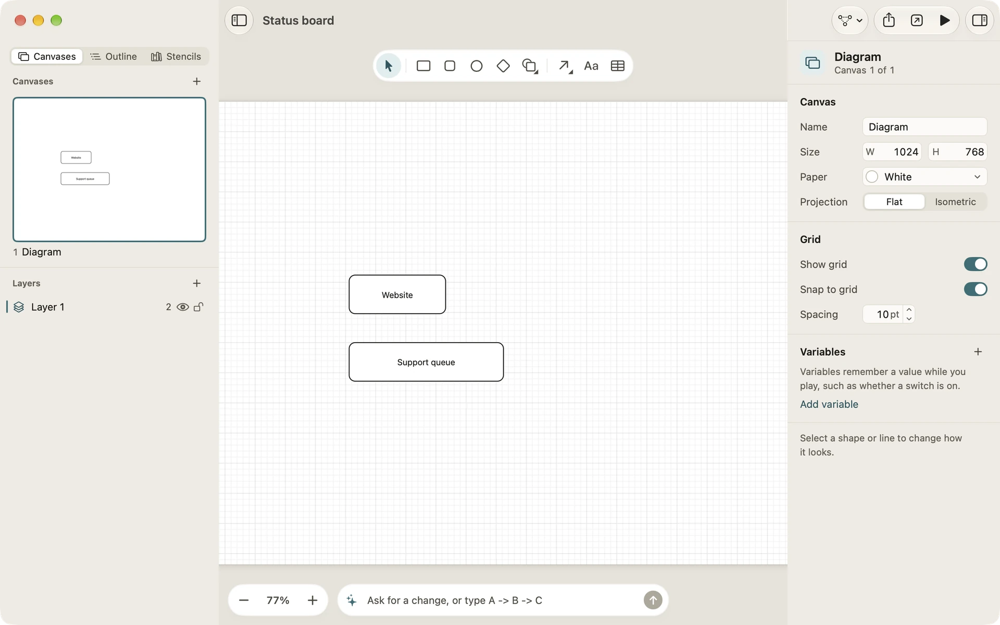
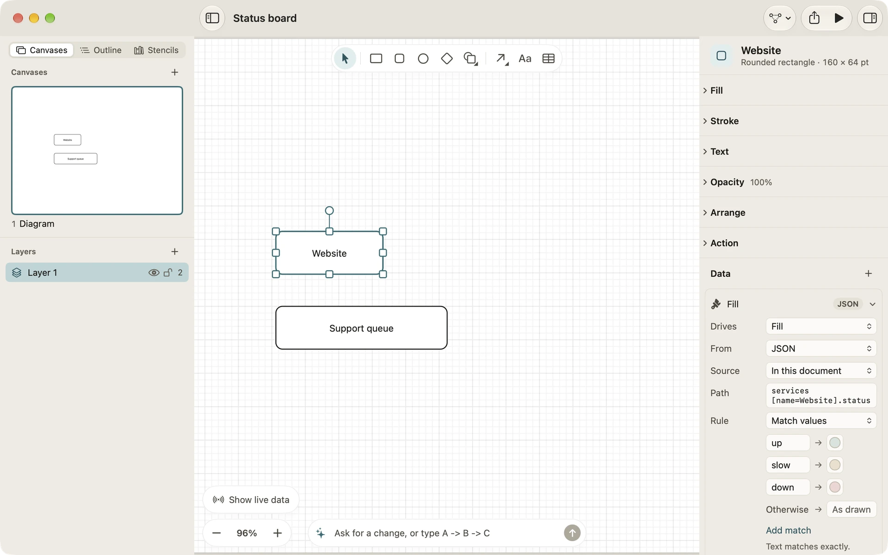
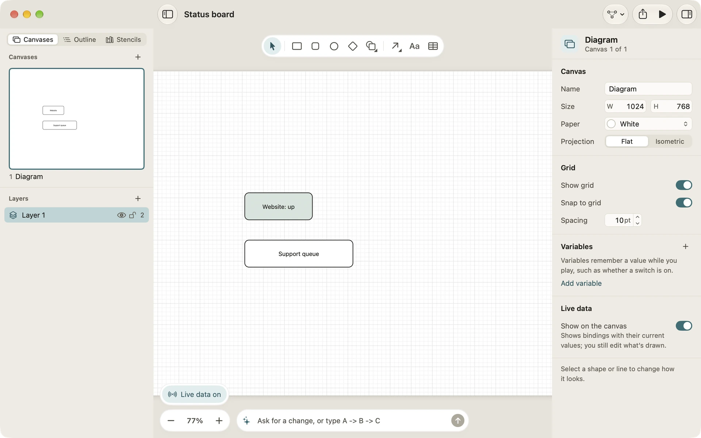
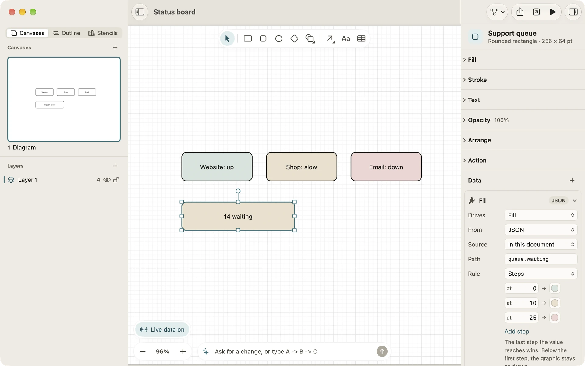
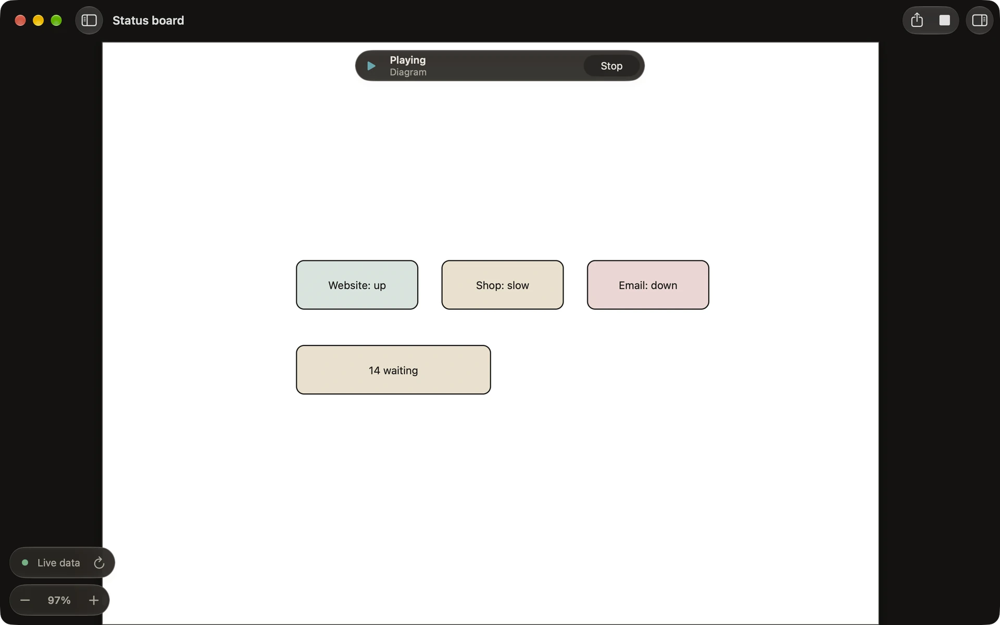

A live status board from a JSON file
A Binding lets a graphic take its words, colours, visibility or progress from data. In this tutorial you build a small status board for three services and a support queue. Each box turns green, amber or red from a JSON file, and says what the file says. You start with a file kept inside the Document, then switch to a web address so the board keeps itself up to date.
1. Write the data
Save this as status.json, in TextEdit set to plain text or in any code editor:
{
"services": [
{"name": "Website", "status": "up"},
{"name": "Shop", "status": "slow"},
{"name": "Email", "status": "down"}
],
"queue": {"waiting": 14}
}2. Draw the board
- Choose File › New diagram (Command-N), then save it as Status board (Command-S). On iPad, tap New diagram.
- Choose Rounded rectangle in the tool palette and drag out a box. Double-click it (or press Return) and type “Website”.
- Draw a second, wider box below it, double-click it and type “Support queue”.
Leave Shop and Email for later: you’ll copy the Website box once its Bindings are set.

3. Colour Website from the file
- Select the Website box. In the inspector, open Data and choose Add binding › Fill.
- Set From to JSON.
- Open the Source menu and choose Use a file…, then choose
status.json. Diagrove keeps a copy of it inside the Document. - In Path, type
services[name=Website].status. This finds the item inserviceswhosenameis Website, and reads itsstatus. - Set Rule to Match values. The rule starts with one match and Otherwise. Type
upin the first match’s value and choose light green for it. Click Add match twice, and makeslowgive light amber anddowngive light red. - Otherwise starts with a colour of its own. To leave the box as drawn when nothing matches, right-click the Otherwise row (touch and hold on iPad) and choose Leave as drawn.
Text matches exactly, so “Up” and “up” are different values. Numbers and true or false match however they’re written.

4. Put the status in its words
- With Website still selected, click + (Add a binding) in the Data section and choose Text.
- Set From to JSON, choose Use a file… and
status.jsonagain, and type the same path. - Set Rule to Format text and type
Website: {value}. The value goes where{value}is.
5. See it live
Bindings don’t change the drawing you edit. To see what the data does, click Show live data in the canvas’s bottom-left corner, above the zoom control. The Website box turns light green and reads “Website: up”. Click it again to see the canvas as drawn. Edits you make while it’s on still change the drawing.

6. Copy it for Shop and Email
- Select Website and press Command-D twice. Copies keep their Bindings.
- Move the copies beside it, double-click each one and type “Shop” and “Email” as their words.
- For each copy, change the Path of both Bindings to
services[name=Shop].statusorservices[name=Email].status, and change the Format text toShop: {value}orEmail: {value}.
With live data showing, Shop turns light amber and Email light red.
7. Colour the queue by steps
Match values suits words. For a number, use Steps:
- Select Support queue and add a Fill binding from JSON, with the same file and the path
queue.waiting. - Set Rule to Steps. The rule starts with two steps: at 0 gives light green and at 10 gives light orange. Change the second step’s colour to light amber. Click Add step, which adds a step after the last one, and make it at 25, light red.
- Add a Text binding with the same path, the rule Format text and
{value} waiting.
The last step the value reaches wins, so 14 waiting is amber. Below the first step, the graphic stays as drawn.

8. Read it from a web address
A file kept in the Document stays as it was when the original changes; to update it, choose Choose another file… in the Source menu. To have the board follow the data by itself, put status.json on a web server and:
- In each binding, open Source and choose Use a link instead.
- Type the address in Link. It must start with
https://. - Click Load now to read it straight away.
Diagrove reads a link only while you play or show live data, and again every 30 seconds while it does. Opening the Document never reaches the network by itself, and if a read fails, the board keeps the last values it read. This is the only time Diagrove uses the network for your diagrams.
9. Play it
Click Play (Option-Command-P on the Mac). The canvas’s bottom-left corner shows how the live data stands, with a refresh button to read it again now. Change status.json on the server, wait half a minute or refresh, and watch the board follow.

Where to go next
- Bindings: every property, source and rule, variables and shortcuts included.
- Play mode and Actions: buttons that set variables your Bindings follow.
- Export for the web: the web player reads JSON Bindings too.